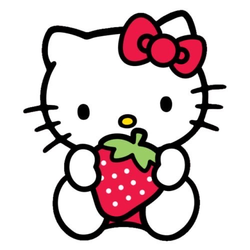

About Author
Creator of this site really likes sanrio characters and want to share this with you. There are is an interesting information about them and I hope you will like it too. There are some popular characters from Sanrio. they are very different and there also are a lot of cartoons and animes about them.